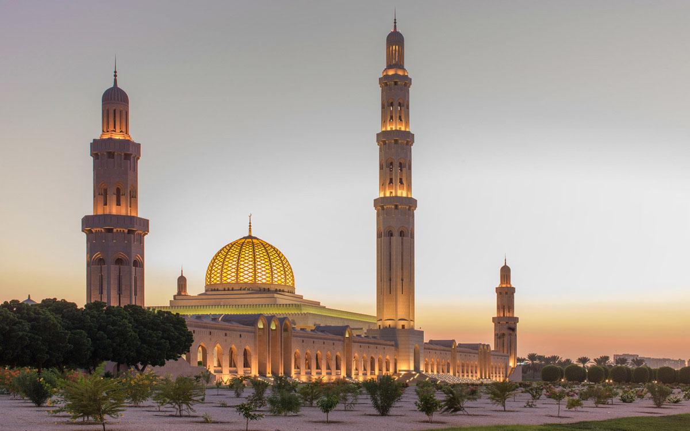

Famous Landmarks

Sultan Qaboos Grand Mosque
One of the largest mosques in the world, known for its stunning architecture and intricate interiors.

Wahiba Sands
An iconic desert destination, offering dune bashing, camel rides, and starry night camping experiences.

Mutrah Souk
A bustling marketplace in Muscat filled with spices, jewelry, textiles, and authentic Omani souvenirs.